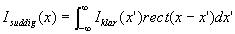

Att sprida ut varje punkt utefter en linje är en operation som brukar kallas faltning.
Matematiskt behöver man en funktion som har värdet 1 för de x linjen täcker och 0 annars. Denna funktion kallar vi rect(x).
Den suddiga bilden fås då av

vilket i matlab mostvaras av funktionen conv (eng convulution) och i två dimensioner conv2